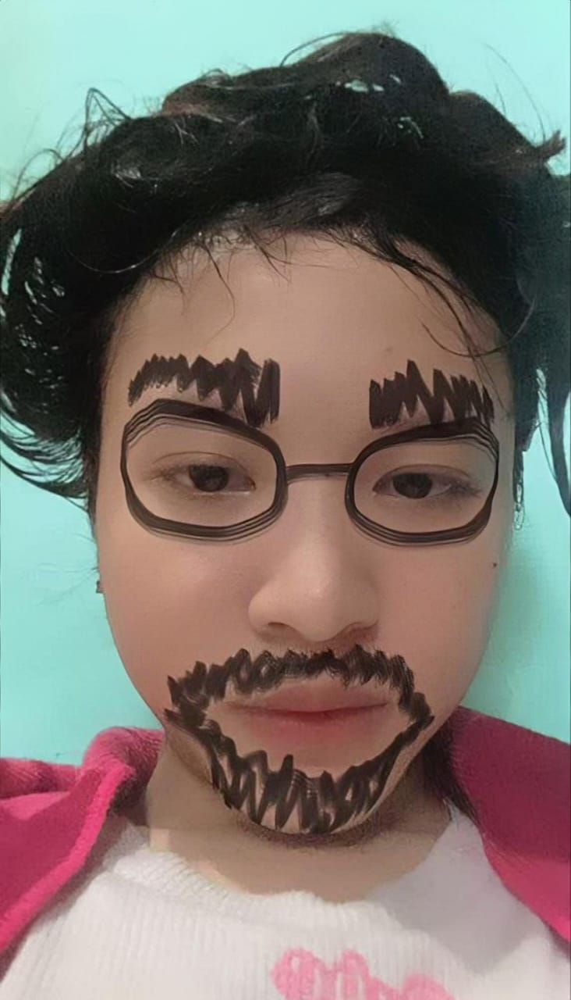
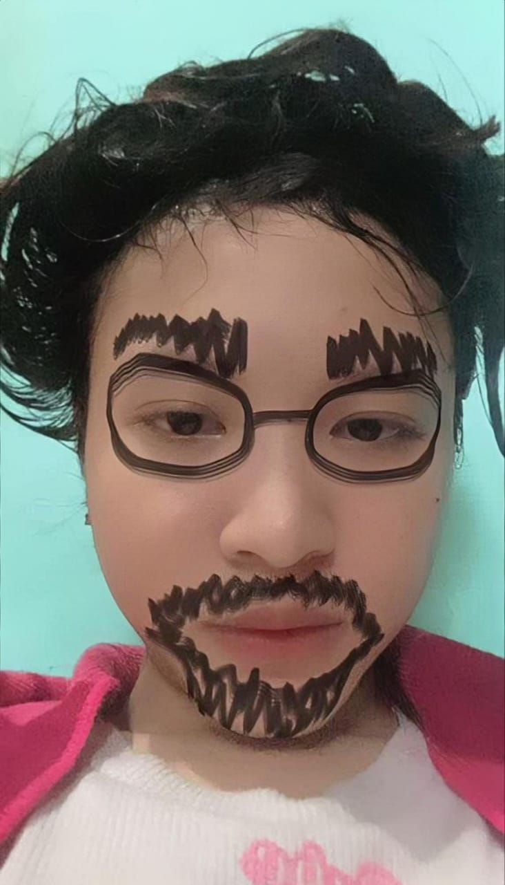
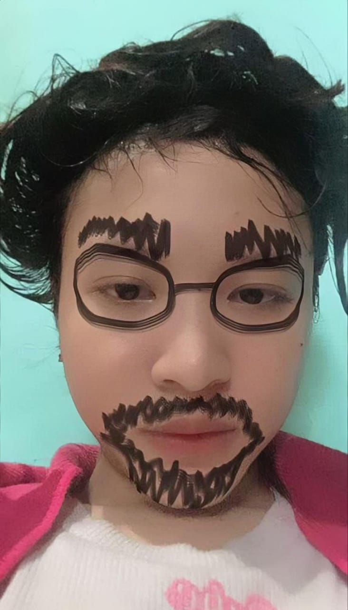

maaff yaa sayangg akuu bilangg nyaa telat satuu hariii,
benerr benerr mintaa maaff karenaa akuu gaa bisaa bagi waktuu,
akuu benerr benerr mintaa maaff yaa sayangg ❤️
üé∂ Pencet dulu tombol play musiknya yaa sayang biar makin kerasa romantis üíï

Sayangku Salwa Ghania Aziza, aku tau mungkin ucapan ini datangnya telat, tapi rasa sayang aku ke kamu nggak pernah telat sedetik pun. Aku pengen kamu tau, di setiap hariku selalu ada ruang yang penuh sama kamu, entah aku sibuk, capek, atau bahkan lagi nggak baik-baik aja, bayangan kamu selalu jadi alasan aku semangat lagi.
Aku minta maaf ya kalau aku sering nggak bisa bagi waktu, sering bikin kamu nunggu atau bahkan bikin kamu ngerasa nggak diperhatiin. Padahal sebenarnya, di hatiku, kamu itu selalu nomor satu. Kamu rumah aku, kamu tempat aku pulang, dan kamu adalah alasan kenapa aku terus berusaha jadi lebih baik setiap harinya.
Semoga di ulang tahunmu ini, semua doa-doa indah terkabul buat kamu. Aku berjanji akan selalu ada, nemenin kamu di hari-hari indah maupun saat-saat sulit. Karena bersamamu, aku nggak butuh alasan lain untuk bahagia. Aku sayang banget sama kamu, lebih dari yang bisa aku jelasin dengan kata-kata. ❤️
pencet donk üëá